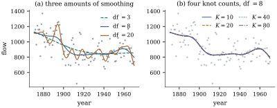

43.3 Penalized splines
The last section ended with a dilemma. A regression spline with few knots is too rigid to follow the data; one with many knots overfits; and the number of knots is a discrete parameter that cannot be tuned gently. The resolution is to stop treating the knots as the control: take too many of them — enough that the basis could interpolate — and shrink the coefficients towards a smooth configuration with a quadratic penalty. This is Definition 30.1.1 with a particular penalty, and by Theorem 27.2.2 it is ridge regression in the B-spline basis.
43.3.1. The difference penalty
If the basis is rich, neighbouring B-splines overlap
heavily and neighbouring coefficients describe nearly
the same part of the curve. A wiggly fit is one whose
coefficient sequence
Write
Let
This is the construction of Eilers and Marx (1996),
who gave it the name P-spline. In the scaling of Definition 30.1.1
the criterion carries a factor
Three things have changed since Section 43.2. The number of
knots is a computational decision, not a modelling one:
take enough. The estimate is no longer a projection, so
it has bias even when
43.3.2. The fit, and what the penalty does to it
Suppose
Proof.
The vectors
Let
(a)
(b)
decrease strictly and continuously from
(c) As
Proof.
(a) The criterion is
(b) The representation Eq. 43.3.2 is a spectral decomposition, since the
(c) By Eq. 43.3.2,
Idea. Compare Theorem 27.2.2(b). Ridge
shrinks the coordinate along the
43.3.3. What survives as the penalty grows
Part (c) says the limit is a projection onto a
Let
(a)
(b) For
(c) For
Proof.
(a) If
(b) For
(c) For
Remark (Why the knot sequence matters here
and nowhere else). Part (c) is exactly true for
the uniform sequence and only approximately true for the
clamped sequence Eq. 43.2.1, whose
Greville abscissae bunch up near the endpoints. On the
Nile data of Example (Nile flow, 1871 to 1970),
against a response range of
43.3.4. Knots stop mattering
The annual flow of the Nile at Aswan was recorded for
Now hold df at
Figure 43.3.1 draws both comparisons. The fitted curve descends steeply around 1900, and it is worth saying what a smoother does and does not know: the historical record is of an abrupt change, and a smoother with a second-order penalty cannot represent a jump. It renders one as a steep smooth descent and reports no lack of fit (Theorem 14.6.2 would, if the design had replicates). Smoothness is an assumption, and like every assumption in this book it buys precision by excluding something.

import numpy as np
import statsmodels.api as sm
def uniform_knots(a, b, K, d):
"""K interior knots equally spaced in (a, b), continued d further steps at each end."""
delta = (b - a) / (K + 1)
return a + delta * np.arange(-d, K + 2 + d)
def bspline_basis(x, kn, d):
"""The B-splines of degree d on the knot vector kn, by the de Boor recurrence."""
x = np.atleast_1d(np.asarray(x, float))
B = np.array([(x >= kn[j]) & (x < kn[j + 1]) for j in range(len(kn) - 1)], float).T
last = np.max(np.nonzero(kn[:-1] < kn[1:])[0]) # close the rightmost interval
B[x == kn[-1], last] = 1.0
for deg in range(1, d + 1):
C = np.zeros((len(x), B.shape[1] - 1))
for j in range(C.shape[1]):
if kn[j + deg] > kn[j]:
C[:, j] += (x - kn[j]) / (kn[j + deg] - kn[j]) * B[:, j]
if kn[j + deg + 1] > kn[j + 1]:
C[:, j] += (kn[j + deg + 1] - x) / (kn[j + deg + 1] - kn[j + 1]) * B[:, j + 1]
B = C
return B
def difference_matrix(m, k):
"""The k-th difference operator on m coefficients, an (m-k) x m matrix."""
return np.diff(np.eye(m), n=k, axis=0)
def pspline(x, y, lam, K=20, d=3, k=2, a=None, b=None):
"""Penalized spline fit: minimize ||y - B gamma||^2 + lam ||Delta^k gamma||^2."""
a = x.min() if a is None else a
b = x.max() if b is None else b
kn = uniform_knots(a, b, K, d)
B = bspline_basis(x, kn, d)
Dk = difference_matrix(B.shape[1], k)
A = B.T @ B + lam * Dk.T @ Dk
gamma = np.linalg.solve(A, B.T @ y)
df = np.trace(np.linalg.solve(A, B.T @ B)) # trace of the smoother matrix
return gamma, df, kn, d
def evaluate(gamma, kn, d, grid):
return bspline_basis(grid, kn, d) @ gamma
data = sm.datasets.nile.load_pandas().data
year = data["year"].to_numpy()
y = data["volume"].to_numpy()
n = len(y)
x = (year - year.min()) / (year.max() - year.min()) # the covariate, rescaled to [0, 1]
grid = np.linspace(0, 1, 401)
gamma_big, df_big, kn, d = pspline(x, y, 1e12)
line = np.polyval(np.polyfit(x, y, 1), grid)
print("df at lambda = 1e12:", round(df_big, 6))
print("largest gap from the least squares line:", np.max(np.abs(evaluate(gamma_big, kn, d, grid) - line)))43.3.5. Choices that remain
How many knots. Enough that adding
more changes nothing, which Example (Nile flow, 1871 to 1970)
suggests is a few dozen; Ruppert’s rule of thumb is
The degree. Cubic (
The order of the penalty.
The smoothing parameter. Section 43.5.
Remark (Derivative penalties). A
different penalty measures roughness by an integral,
43.3.6. Exercises
A. Check your understanding
Using Eq. 43.3.3, sketch
B. Practice
A model with
Solution. By Eq. 43.3.2,
Show that the P-spline criterion Eq. 43.3.1 is Theorem 29.3.2’s
criterion
C. Going deeper
Compute the Demmler–Reinsch basis of Lemma 43.3.1 for a cubic
P-spline with
Proposition 43.3.2
assumes
Solution.
Assume
Solution. Write